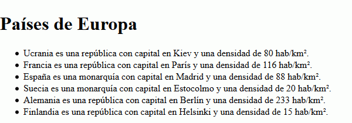

Resuelva los siguientes ejercicios guardando las respuestas en una carpeta cuyo nombre contenga su nombre y apellidos.
El siguiente documento no está bien formado porque contiene errores. Corrija los errores (si para corregir algún error hay que inventarse una etiqueta o atributo, utilice un nombre que tenga relación con la información contenida en el documento).
<?xml version="1.0" encoding="UTF-8"?>
diccionario para corrector ortográfico
<palabra#correcta idioma=español>hincapié
<palabra#incorrecta idioma=español>incapié
<signo="?" />interrogación
<autor>Barto</ autor>
Dado el siguiente documento XML, escriba las expresiones XPath que devuelvan exactamente la respuesta indicadas en los cuadros. Escriba todas las expresiones XPath en un único fichero de texto, numerando las respuestas.
<?xml version="1.0" encoding="UTF-8"?>
<geografia>
<organizaciones>
<organizacion nombre="otan" tipo="militar" />
<organizacion nombre="ue" tipo="economico" />
</organizaciones>
<otan>
<pais nombre="Francia" entrada="1948" />
<pais nombre="España" entrada="1982" />
<pais nombre="Alemania" entrada="1955" />
</otan>
<ue>
<pais nombre="Francia" entrada="1957" />
<pais nombre="España" entrada="1986" />
<pais nombre="Suecia" entrada="1995" />
<pais nombre="Alemania" entrada="1957" />
<pais nombre="Finlandia" entrada="1995" />
</ue>
<paises>
<pais tipo="república">
<nombre>Ucrania</nombre>
<capital>Kiev</capital>
<datos superficie="603700" poblacion="48.4" />
</pais>
<pais tipo="república">
<nombre>Francia</nombre>
<capital>París</capital>
<datos superficie="547030" poblacion="63.2" />
</pais>
<pais tipo="monarquía">
<nombre>España</nombre>
<capital>Madrid</capital>
<datos superficie="547030" poblacion="48.4" />
</pais>
<pais tipo="monarquía">
<nombre>Suecia</nombre>
<capital>Estocolmo</capital>
<datos superficie="449964" poblacion="9.1" />
</pais>
<pais tipo="república">
<nombre>Alemania</nombre>
<capital>Berlín</capital>
<datos superficie="357021" poblacion="83.3" />
</pais>
<pais tipo="república">
<nombre>Finlandia</nombre>
<capital>Helsinki</capital>
<datos superficie="336953" poblacion="5.2" />
</pais>
</paises>
</geografia>
nombre="Francia"
nombre="España"
nombre="Suecia"
nombre="Alemania"
nombre="Finlandia"
Estocolmo
nombre="Francia"
nombre="Alemania"
tipo="república"
tipo="república"
poblacion="83.3"
poblacion="5.2"
París
Madrid
Estocolmo
Berlín
Helsinki
Dado el documento XML del ejercicio 3, escriba y enlace las hojas de estilo XSLT que devuelvan la respuesta deseada.
Nota: En el atributo select se pueden hacer cálculos, usando por ejemplo los operadores + (suma), - (resta), * (multiplicación), div (división) y round() (redondear). Por ejemplo, podría calcular la velocidad a partir de distancia y tiempo:
<xsl:value-of select="round(distancia div tiempo)" />
<?xml version="1.0" encoding="UTF-8"?>
<html>
<h1>Países de Europa</h1>
<ul>
<li>Ucrania es una república con capital en Kiev
y una densidad de 80 hab/km².</li>
<li>Francia es una república con capital en París
y una densidad de 116 hab/km².</li>
<li>España es una monarquía con capital en Madrid
y una densidad de 88 hab/km².</li>
<li>Suecia es una monarquía con capital en Estocolmo
y una densidad de 20 hab/km².</li>
<li>Alemania es una república con capital en Berlín
y una densidad de 233 hab/km².</li>
<li>Finlandia es una república con capital en Helsinki
y una densidad de 15 hab/km².</li>
</ul>
</html>
<?xml version="1.0" encoding="UTF-8"?>
<paises>
<entrada>
<otan>Francia, 1948</otan>
<otan>España, 1982</otan>
<otan>Alemania, 1955</otan>
</entrada>
<pais capital="Kiev" superficie="603700" poblacion="48.4">Ucrania</pais>
<pais capital="París" superficie="547030" poblacion="63.2">Francia</pais>
<pais capital="Madrid" superficie="547030" poblacion="48.4">España</pais>
<pais capital="Estocolmo" superficie="449964" poblacion="9.1">Suecia</pais>
<pais capital="Berlín" superficie="357021" poblacion="83.3">Alemania</pais>
<pais capital="Helsinki" superficie="336953" poblacion="5.2">Finlandia</pais>
</paises>